reminders-default 동일 데이터·폭
390 dp/pt, 2026-09-26 10:00 KST, 결제 4건·2455만 원. Android API35의 52dp 상단 인셋을 iOS 비교 뷰에도 주입. 헤더·수신 경로·칩·결제 목록·자동 저장을 수정. 아이콘/일부 행 높이와 Tmoney 합성 굵기는 차이 있음.
검수: 상태·문구·주요 구성 일치, 아이콘·행 높이·합성 굵기 차이 잔존
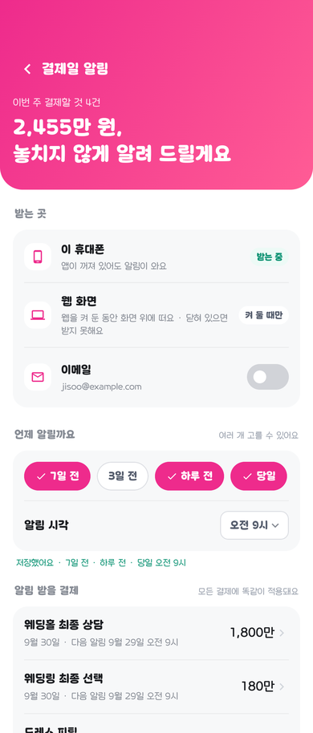
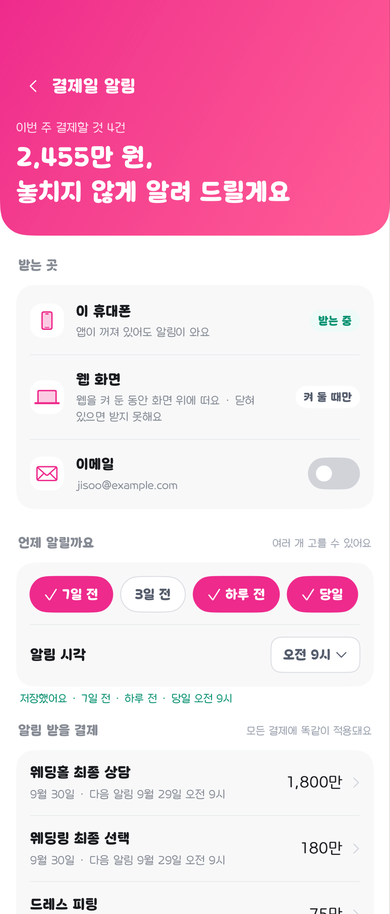
전 화면 완전 일치 판정이 아닙니다. 동일 조건의 캡처와 구조 참고 캡처를 구분했습니다. 이미지 색 공간은 sRGB로 통일했습니다. 문구·배치·모션 차이를 숨기는 자동 유사도 점수는 사용하지 않습니다.
390 dp/pt, 2026-09-26 10:00 KST, 결제 4건·2455만 원. Android API35의 52dp 상단 인셋을 iOS 비교 뷰에도 주입. 헤더·수신 경로·칩·결제 목록·자동 저장을 수정. 아이콘/일부 행 높이와 Tmoney 합성 굵기는 차이 있음.
검수: 상태·문구·주요 구성 일치, 아이콘·행 높이·합성 굵기 차이 잔존


390 dp/pt, 패스 없음·알림 권한 없음·선택 시점 없음·오후 6시. 같은 상태의 경고와 빈 목록을 비교.
검수: 상태·문구·주요 구성 일치, 아이콘·행 높이·합성 굵기 차이 잔존
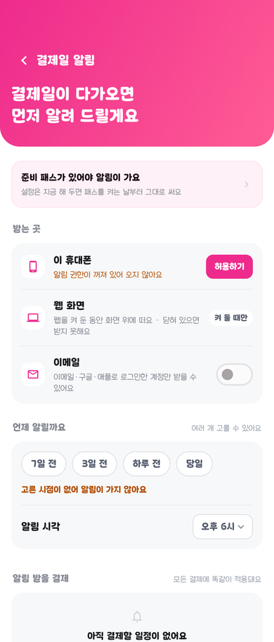
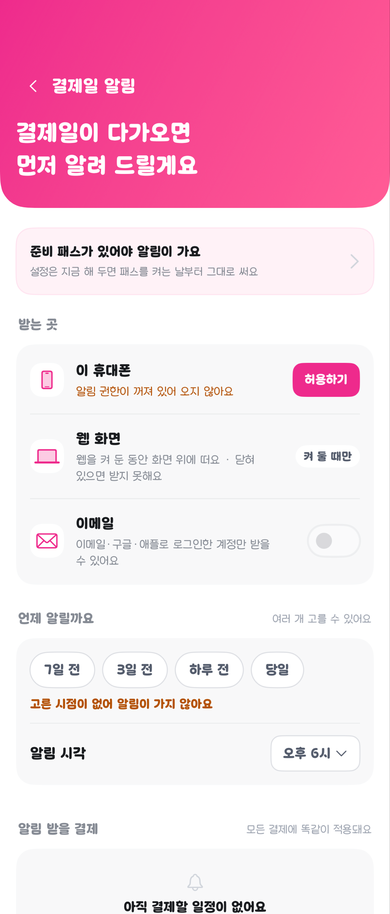
411.43 dp/pt, 스튜디오 촬영·185만 원·남은 예산1965만 원, 모션을 멈춘 카드 본문. 실제 기울기 센서는 이 캡처의 검증 범위에 없음.
검수: 문구·금액·구성·주요 위치 일치, 글리프/미세 렌더링 차이 잔존
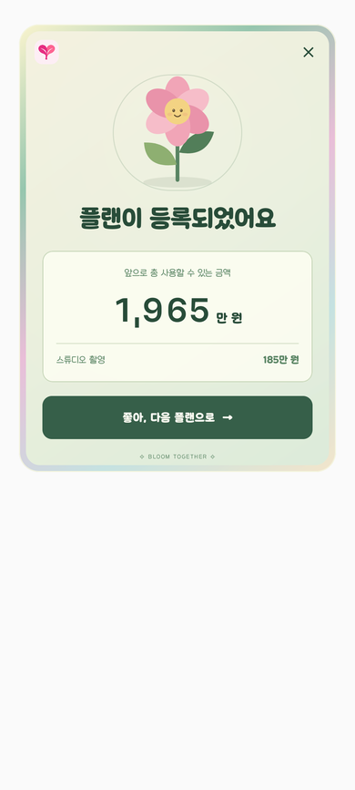
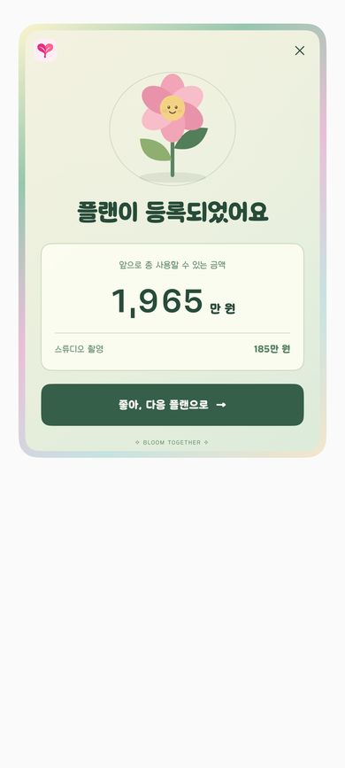
같은 데이터의 수정 완료 카드 본문.
검수: 문구·금액·구성·주요 위치 일치, 글리프/미세 렌더링 차이 잔존
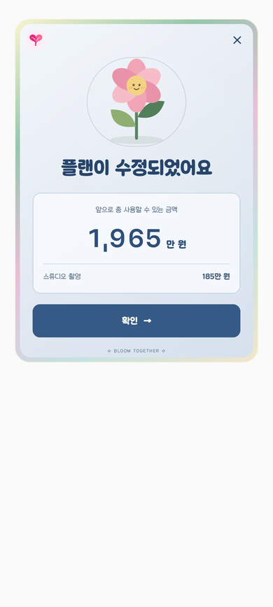
같은 데이터의 삭제 완료 카드 본문.
검수: 문구·금액·구성·주요 위치 일치, 글리프/미세 렌더링 차이 잔존
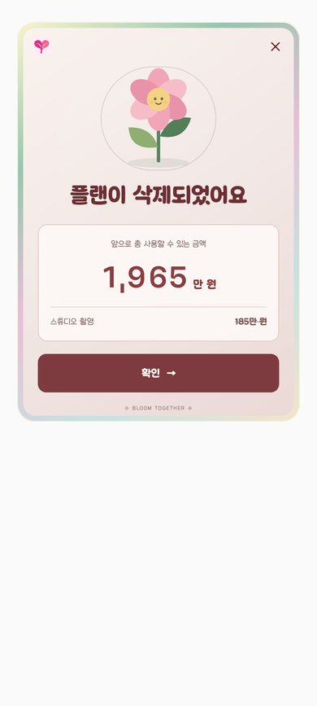
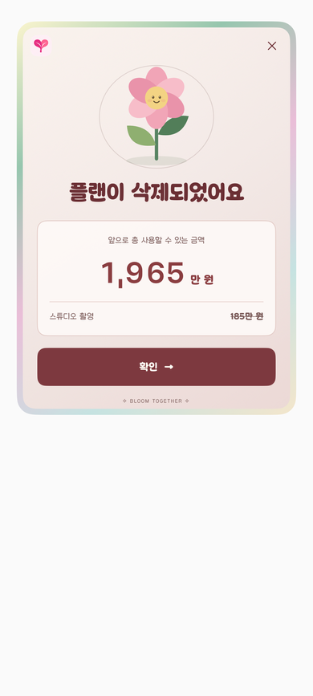
패스 소개. 잘못 연결된 Round 폰트·로고·요금제 보기 문구·카드와 제목 배치 수정. Android는 모션 정지, iOS는 건너뛰기 후 실행 중인 프레임이라 조명/회전은 픽셀 동등 비교 불가.
검수: 섹션 이동 기능 통과. 조명·장식·시연 내부 배치 차이 잔존, 모션 정지 시점은 서로 다름
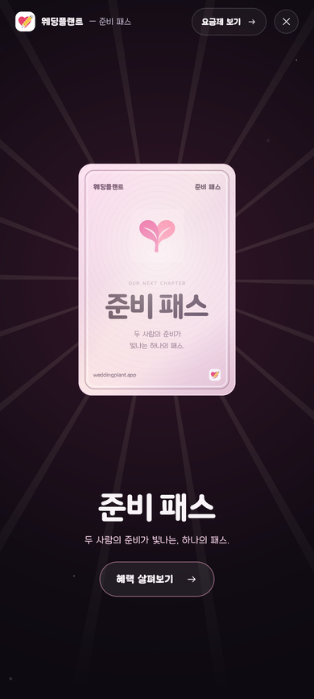
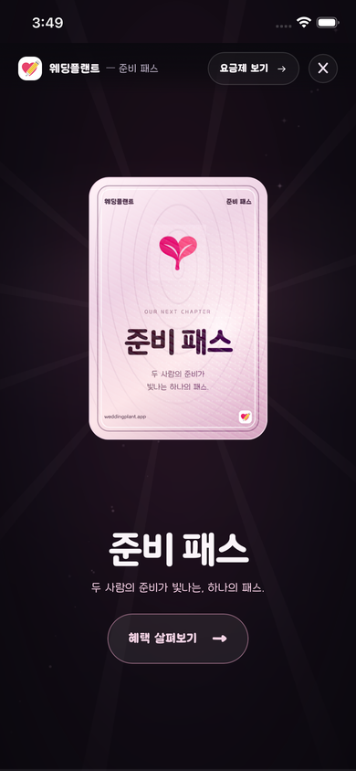
서류 보관 시연. 같은 섹션이지만 캡처 시점이 달라 시연 진행 상태가 다름.
검수: 섹션 이동 기능 통과. 조명·장식·시연 내부 배치 차이 잔존, 모션 정지 시점은 서로 다름
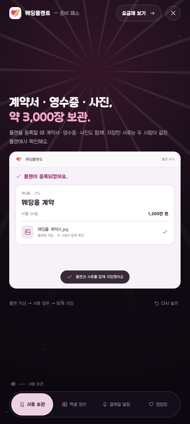
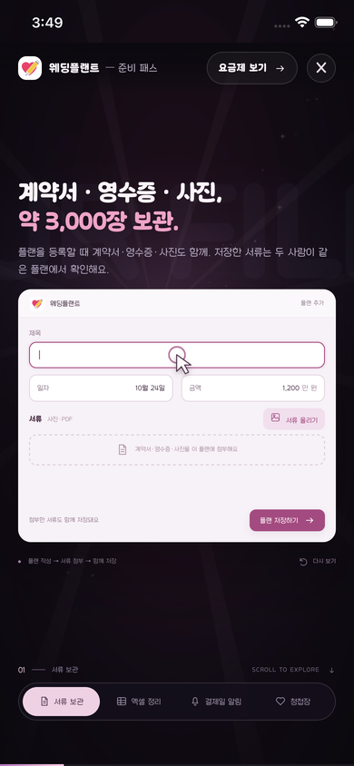
화면 구조 비교용. 후기 데이터·통계·카테고리·상태바/탭 여유 공간이 다르므로 픽셀 일치 판정에 쓰지 않음.
검수: 데이터/진입 상태 불일치로 화면 일치 판정 제외
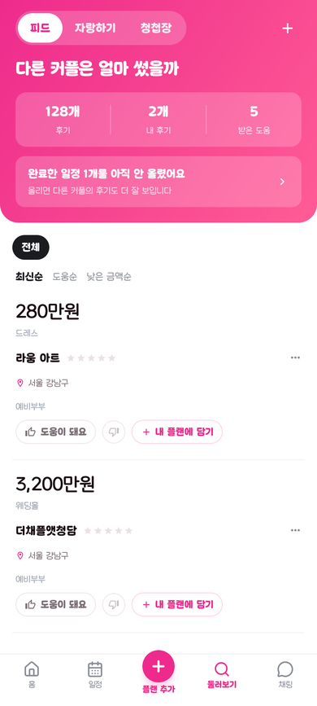
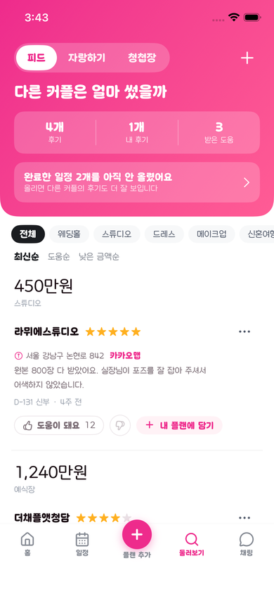
혼자일 때 초대 화면. 문구 차이를 수정. Android 단독 탭 본문과 iOS 전체 앱이라 하단 탭 유무·중앙 정렬 영역이 다름.
검수: 초대 문구 일치, 버튼·행간·정렬 영역 차이 잔존
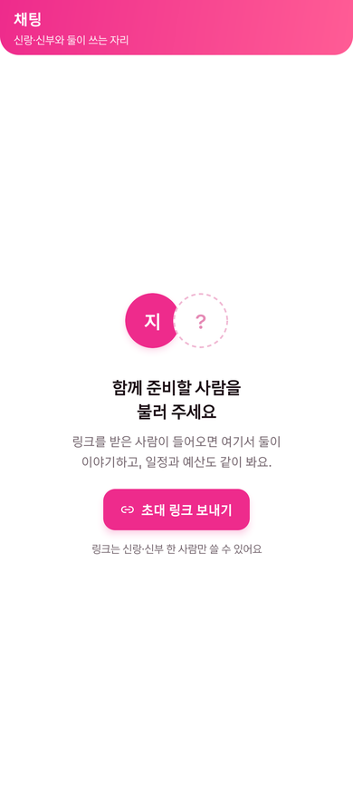
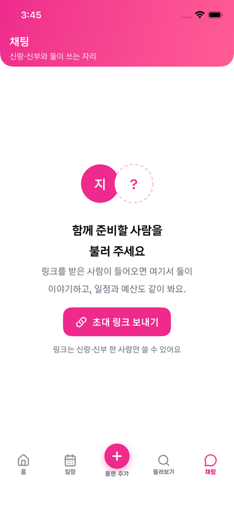
제목 드레스 투어·카테고리 드레스·카드·금액0·2026-10-13을 입력한 상태. Android는 위치 검증 오류가 표시된 본문, iOS는 오류 전 상태이며 기기/안전 영역이 다름. 제목 보조문구·카테고리 칩·결제 버튼·시각 표시·저장 버튼/그림자 차이가 남아 있음.
검수: 입력 후 실제 폼 확인. 같은 주요 입력값에서도 버튼·칩·보조문구·시간 표시 차이 잔존
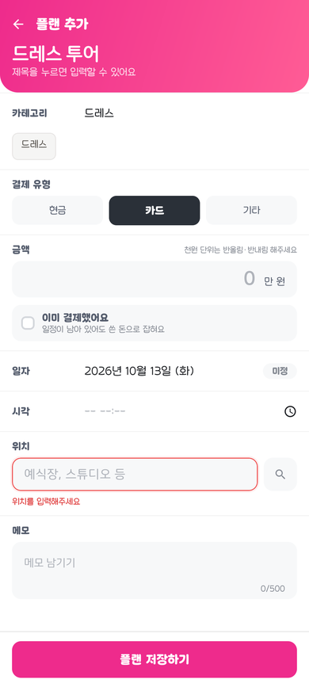
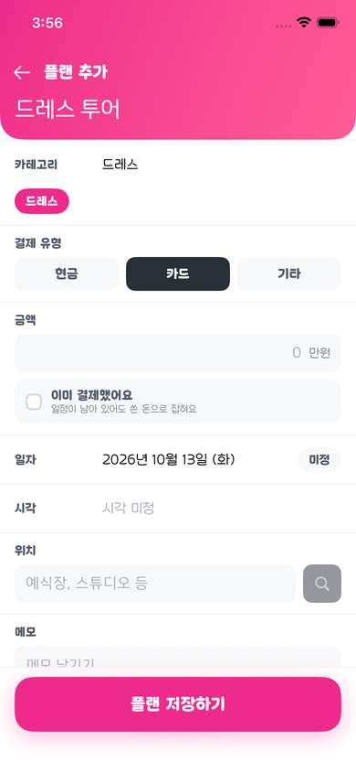
Android 정지 프레임과 iOS 섹션 전환 후 실행 중 프레임. 시연 진행 상태·장식·배치의 차이를 확인하는 캡처이며 프레임 동등성 판정이 아님.
검수: 섹션 이동 기능 통과. 조명·장식·시연 내부 배치 차이 잔존, 모션 정지 시점은 서로 다름
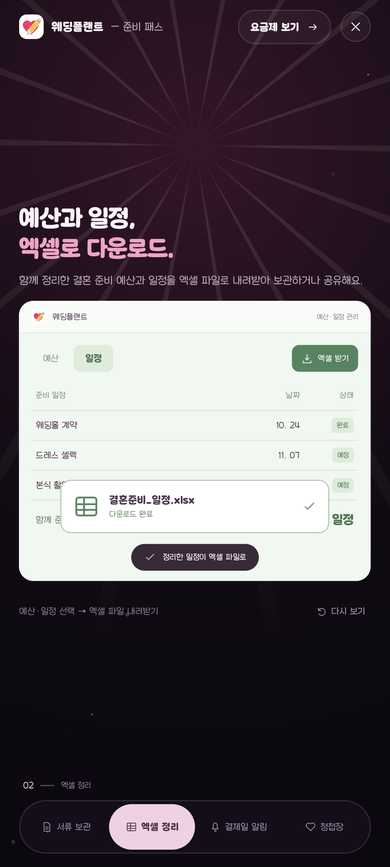
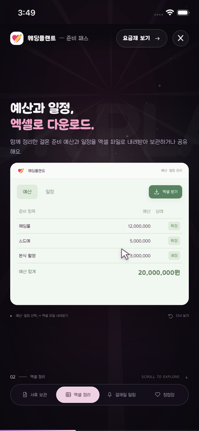
Android 정지 프레임과 iOS 섹션 전환 후 실행 중 프레임. 시연 진행 상태·장식·배치의 차이를 확인하는 캡처이며 프레임 동등성 판정이 아님.
검수: 섹션 이동 기능 통과. 조명·장식·시연 내부 배치 차이 잔존, 모션 정지 시점은 서로 다름
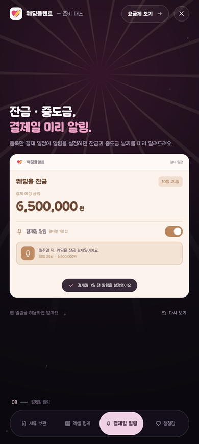
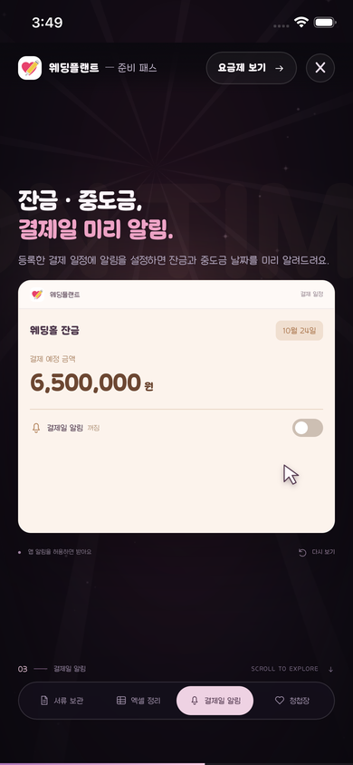
Android 정지 프레임과 iOS 섹션 전환 후 실행 중 프레임. 시연 진행 상태·장식·배치의 차이를 확인하는 캡처이며 프레임 동등성 판정이 아님.
검수: 섹션 이동 기능 통과. 조명·장식·시연 내부 배치 차이 잔존, 모션 정지 시점은 서로 다름
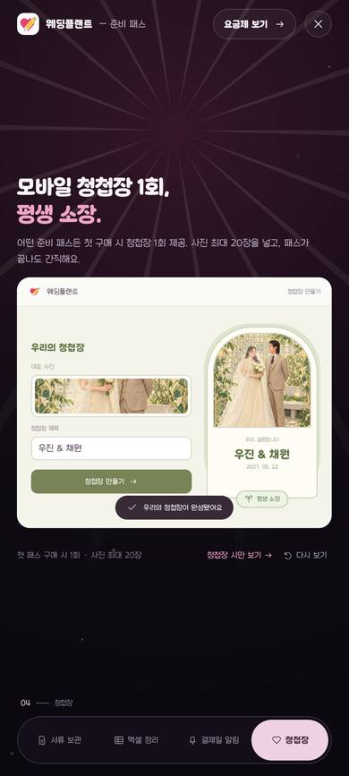
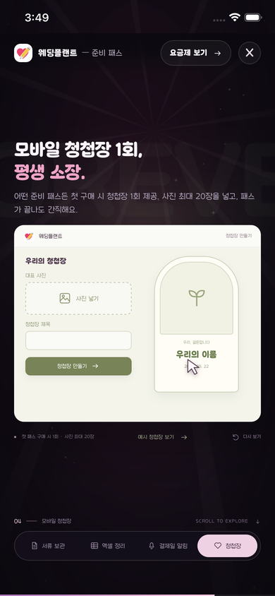
같은 411.43 dp/pt 폭·분홍 헤더170·간격12·원본320×440 정원. 양쪽 실제 캡처에서 헤더를 통과하는 하객을 확인. 캡처 시점·난수·픽셀 폰트의 기기 밀도는 다르며 표시된 프레임은 같은 시각이 아님. 대화창은 수정 후 캡처.
검수: 양쪽 헤더 통과 낙하 확인, 궤적 133프레임 별도 통과. 이름표·말풍선·폰트 밀도 차이 잔존
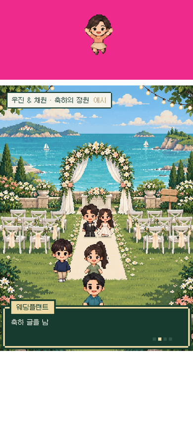
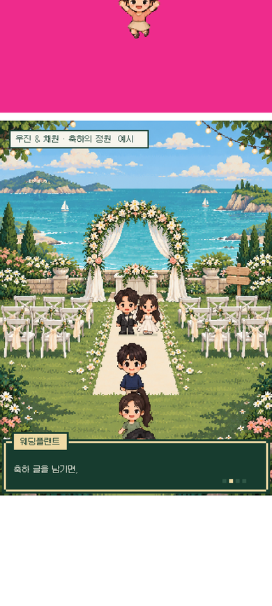
각 플랫폼의 실제 연속 캡처입니다. 촬영 시작 시점과 간격이 달라 두 GIF의 재생 위상을 일치 판정에 사용하지 않습니다. 궤적 수치는 Android 원본 실행 결과 133개 프레임으로 별도 검사했습니다.
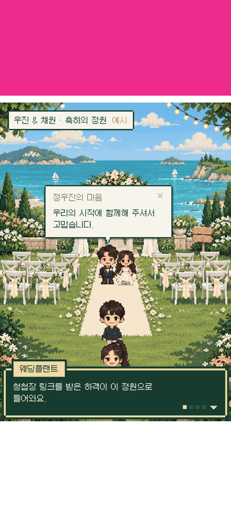
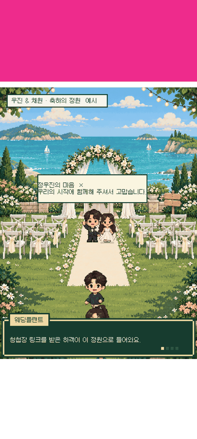